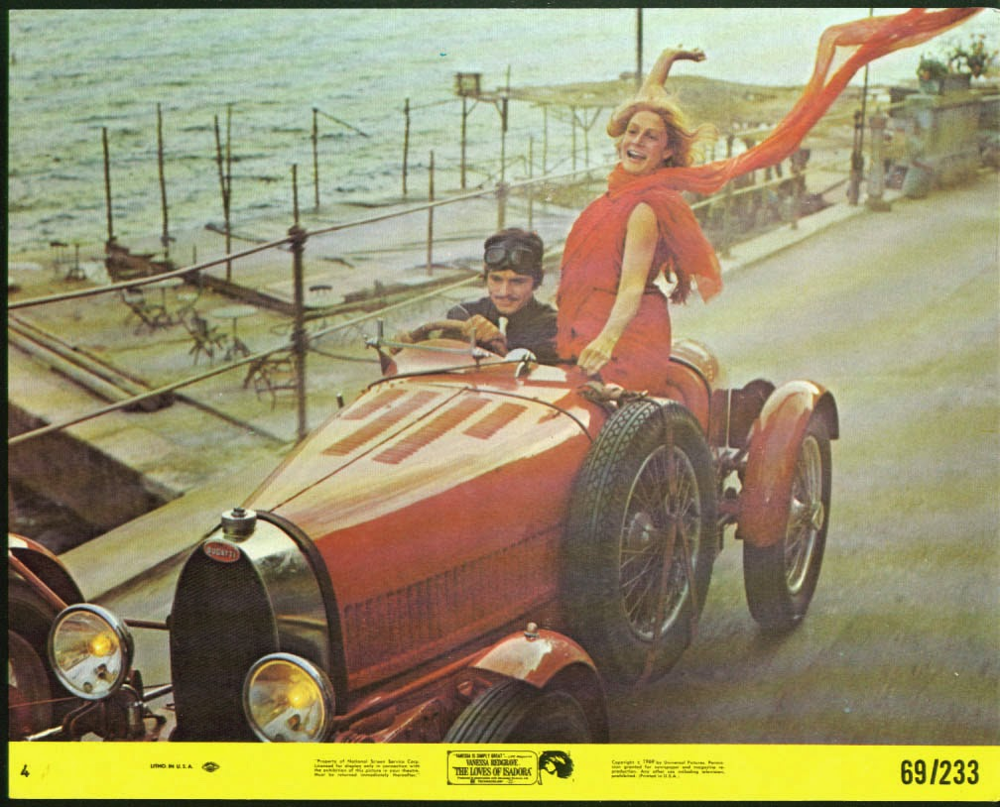
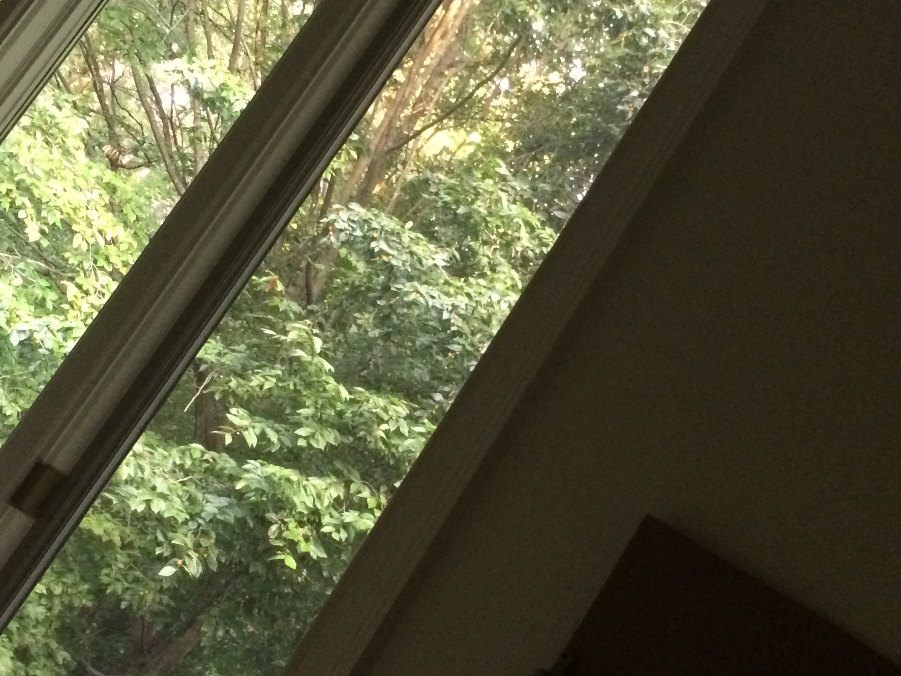

Is it in poor taste to dress as real people for Halloween?
10/17/15
I'll actually need a Halloween costume this year. In the past I've put together last minute costumes that were either generic, or were made from cardboard boxes. I've narrowed it down to a few options, one of which being Isadora Duncan. I really liked that idea, but I've never dressed up as a real person, and I'm a little bit conflicted about it. So, what do you guys think?
[more]If I wait to finish things they'll sit in my draft box until the end of time
9/25/15
Some days I remember both my name and the name of my company when answering the phone. Some days I remember to bring an actual lunch rather than a block of cheese grabbed from the fridge on my way out the door. Some days I even manage to leave work at 5:30 without the itchy feeling that I'd forgotten something. And other days, I'm wandering around downtown with a high-heeled shoe filling with blood while I try and fail to deliver a sensible pantsuit to a TV judge.
[more]Day 22
7/22/15

Today was the second day of my internship. I like the people I work with, and the company’s small enough that I get to help with interesting projects even though I’m just an intern. I’m even getting used to the soundtrack of the two arguing caged birds my boss keeps in her office.
[more]A Return to Chaos
7/14/15
I found this picture on my camera roll this morning, and remembered why I took it a second later. I woke up abruptly and was convinced the branches on the trees just outside my window looked like the face of a muppet. I took this picture as “proof.” Everything is still disorganized here. My sister came to pick out a lamp from the collection on the living room floor. Plumbers showed up as we were running errands, trying to stock the place with laundry baskets and lightbulbs. The water was cut off without warning just as I lathered my hands with the dish soap I’m currently using in my bathroom.
[more]